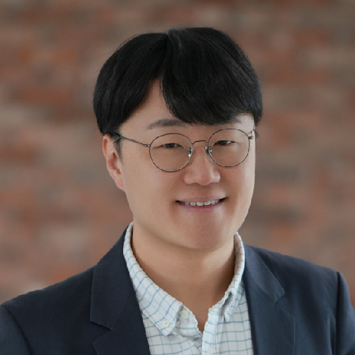
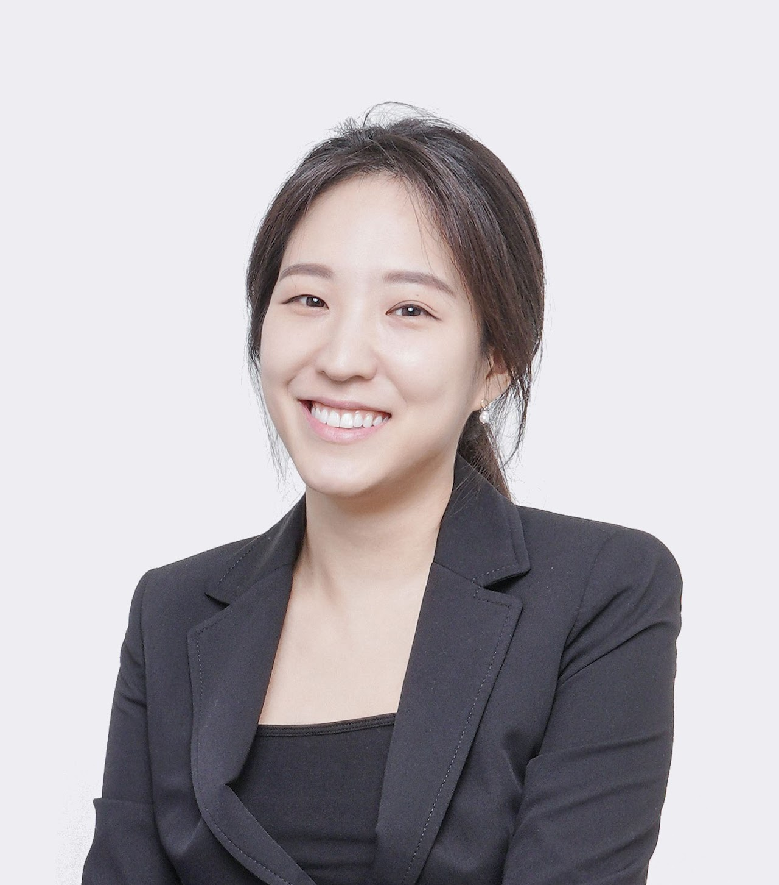

6th Symposium · Hong Kong
An annual gathering of the quantitative phase imaging community in Asia, bringing groups in the region together in person to share recent work in label‑free, quantitative and three‑dimensional imaging.
Updated 24 September 2026. All times are Hong Kong time (HKT, UTC+8). Detailed talk times, titles and speaker order will follow.
The scientific programme runs for a full day on the Friday, with a welcome dinner the evening before and an optional excursion planned for Saturday.
The day is planned around six invited talks of 40 minutes each, including discussion, three in the morning and three in the afternoon, together with a poster session. Approximately four selected posters will be introduced in five-minute lightning talks, and participants will vote for the best poster. Coffee breaks are planned for 20 minutes. Lunch for chairs and invited speakers is booked for 12:00 at CC Staff Canteen.
Quantitative phase imaging measures the optical path a specimen imposes on light, and that single measurement carries a long way. It gives dry mass and refractive index in a living cell, surface figure and film thickness on a semiconductor wafer or a glass substrate, and — through the same phase retrieval — structure at atomic resolution in electron tomography.
The symposium is built around the measurement rather than the specimen. Talks run from optics and reconstruction algorithms through biology and medicine to materials, metrology and inspection, and we would rather the programme were broad than tidy.
Confirmed speakers, listed alphabetically by surname. All invited talks take place on Friday, 20 November. One further invited speaker will be announced once confirmed.

Talk titles and abstracts will be added as they become available.
Attendance is free. Poster submissions are made through the same form.
Poster abstract deadline: 30 October 2026, 23:59 HKT.
Complimentary conference dinner places are offered to advance registrants on a first-come, first-served basis, subject to availability. The current reservation is for 50 people; dinner capacity is separate from registration capacity.
The meeting is held at The Chinese University of Hong Kong. The scientific sessions and posters will be in Ho Sin-Hang Engineering Building (SHB), Room 603. For travel or visa-support coordination, contact Qihang Zhang.
The local team is coordinating hotel arrangements and a possible group discount at Hyatt Regency Hong Kong, Sha Tin. Booking instructions will follow.

An optional Saturday excursion is planned; the route and departure time are still being arranged.

The symposium is in person only — there is no online attendance. Bringing the community into one room for a day is the point of the meeting, and remote participation has not served that well in the past.

